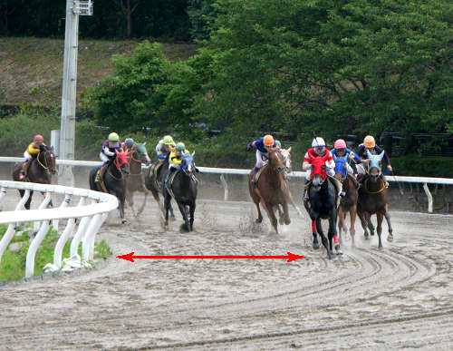

高知競馬場特徴と傾向
最終更新日：
YouTubeで登録者数6万人のうまめし競馬チャンネルを運営しているうまめし君です！
高知競馬場のコース特徴や人気傾向・枠順傾向・脚質傾向・騎手傾向・血統傾向など、馬券に役立つ高知競馬必勝法を考案するべく、さまざまな角度から高知競馬を攻略して行きたいと思います。
もくじ
詳細
- 高知 800m 特徴と傾向
- 高知 1300m 特徴と傾向
- 高知 1400m 特徴と傾向
- 高知 1600m 特徴と傾向
- 高知 1900m 特徴と傾向
- 高知 2400m 特徴と傾向
- 高知ファイナル傾向・予想のコツ
- 高知競馬のレベル
高知競馬場の重賞一覧
無料メルマガで連日の無料予想と秋G1の極秘情報もGETしよう!!
無料メルマガ登録フォーム
コース特徴
高知競馬場は下図の通り、3・4コーナーが大きく、1・2コーナーが小さく、さらに最後の直線が200mという短さになっています。

だから最後の直線だけでは前にいる馬を交わせないので、1コーナーで各馬のペースがグッと落ちたあと、向正面と大きなコーナーを使ってわりと長いラストスパートのできる馬が有利になるコースです。
コースの内側に行くほど砂厚が深くなり、砂が深いとスピードが出ない上にスタミナを削られるので、高知競馬では殆どの馬が内ラチ（柵）から距離をとってレースをするのも特徴ですね。

なので1400mのレースでも、実際には1410mほど走っている事になります。そこで敢えて不利を承知で4コーナーでインを通って、ショートカットして行く作戦も見られます。
高知競馬は賞金水準も低く、お世辞にも馬のレベルは高いとは言えません。
どちらかと言えばJRAでは通用しない、他の地方競馬でも微妙だった馬や、もう高齢になって衰えて来た馬の比率がとても高い競馬場です。
だから馬の状態面とスタートがむちゃくちゃ重要になります。
無料メルマガで連日の無料予想と秋G1の極秘情報もGETしよう!!
無料メルマガ登録フォーム
枠順・脚質傾向
高知競馬場での枠順と脚質別の成績を見ていきましょう。
1枠の成績は（1着386回・2着433回・3着426回・着外2970回）で、勝率は9パーセント・連対率は19パーセント・複勝率は29パーセントとなっています。
2枠の成績は（1着436回・2着437回・3着441回・着外2901回）で、勝率は10パーセント・連対率は20パーセント・複勝率は31パーセントとなっています。
3枠の成績は（1着420回・2着402回・3着440回・着外2953回）で、勝率は9パーセント・連対率は19パーセント・複勝率は29パーセントとなっています。
4枠の成績は（1着389回・2着406回・3着437回・着外2983回）で、勝率は9パーセント・連対率は18パーセント・複勝率は29パーセントとなっています。
5枠の成績は（1着499回・2着494回・3着492回・着外3699回）で、勝率は9パーセント・連対率は19パーセント・複勝率は28パーセントとなっています。
6枠の成績は（1着544回・2着573回・3着556回・着外4351回）で、勝率は9パーセント・連対率は18パーセント・複勝率は27パーセントとなっています。
7枠の成績は（1着647回・2着650回・3着672回・着外4896回）で、勝率は9パーセント・連対率は18パーセント・複勝率は28パーセントとなっています。
8枠の成績は（1着885回・2着798回・3着730回・着外5096回）で、勝率は11パーセント・連対率は22パーセント・複勝率は32パーセントとなっています。
下の表は枠を考慮しない脚質成績
| 逃げ | 先行 | 差し | 追込 | |
|---|---|---|---|---|
| 勝 率 | 32% | 12% | 4% | 1% |
| 連対率 | 50% | 25% | 10% | 4% |
| 複勝率 | 63% | 38% | 19% | 9% |
1枠・2枠の馬は特にスタートでモタつくと砂の深いイン側に寄せられてしまうため注意が必要です。
無料メルマガで連日の無料予想と秋G1の極秘情報もGETしよう!!
無料メルマガ登録フォーム
枠番別馬券数の履歴
| 日付 | 1 | 2 | 3 | 4 | 5 | 6 | 7 | 8 |
|---|---|---|---|---|---|---|---|---|
| 2026/05/03 | 2 | 4 | 2 | 2 | 5 | 5 | 10 | 6 |
| 2026/05/09 | 0 | 3 | 4 | 4 | 4 | 2 | 4 | 9 |
| 2026/05/10 | 4 | 5 | 2 | 0 | 3 | 6 | 6 | 7 |
| 2026/05/16 | 3 | 3 | 2 | 0 | 3 | 5 | 8 | 9 |
| 2026/05/17 | 2 | 4 | 4 | 0 | 4 | 6 | 7 | 9 |
| 2026/05/23 | 1 | 2 | 3 | 4 | 6 | 6 | 6 | 5 |
| 2026/05/24 | 3 | 3 | 2 | 2 | 3 | 1 | 8 | 11 |
| 2026/05/30 | 2 | 0 | 3 | 1 | 4 | 7 | 5 | 8 |
| 2026/05/31 | 4 | 3 | 3 | 1 | 2 | 3 | 5 | 12 |
| 2026/06/06 | 3 | 2 | 5 | 5 | 1 | 2 | 2 | 13 |
人気傾向
高知競馬全体で各人気ごとの成績を調べてみると、以下のような結果になりました。（勝率は1着に来た割合・連対率は2着以内・複勝率は3着以内を表しています。）
高知競馬場での人気別の成績を見ていきましょう。
1番人気の成績は（1着1909回・2着845回・3着448回・着外994回）で、勝率は45パーセント・連対率は65パーセント・複勝率76パーセントとなっています。
脚質別の馬券に絡むパーセンテージは逃げ：91％・先行：76％・差し：60％・追込：45％となっております。
2番人気の成績は（1着904回・2着1005回・3着670回・着外1617回）で、勝率は21パーセント・連対率は45パーセント・複勝率61パーセントとなっています。
脚質別の馬券に絡むパーセンテージは逃げ：76％・先行：62％・差し：52％・追込：33％となっております。
3番人気の成績は（1着491回・2着701回・3着796回・着外2210回）で、勝率は11パーセント・連対率は28パーセント・複勝率47パーセントとなっています。
脚質別の馬券に絡むパーセンテージは逃げ：65％・先行：50％・差し：36％・追込：24％となっております。
4番人気の成績は（1着299回・2着564回・3着640回・着外2693回）で、勝率は7パーセント・連対率は20パーセント・複勝率35パーセントとなっています。
脚質別の馬券に絡むパーセンテージは逃げ：55％・先行：39％・差し：28％・追込：15％となっております。
5番人気の成績は（1着229回・2着382回・3着487回・着外3090回）で、勝率は5パーセント・連対率は14パーセント・複勝率26パーセントとなっています。
脚質別の馬券に絡むパーセンテージは逃げ：45％・先行：29％・差し：20％・追込：14％となっております。
6番人気の成績は（1着130回・2着260回・3着398回・着外3374回）で、勝率は3パーセント・連対率は9パーセント・複勝率18パーセントとなっています。
脚質別の馬券に絡むパーセンテージは逃げ：39％・先行：21％・差し：14％・追込：11％となっております。
7番人気の成績は（1着101回・2着177回・3着300回・着外3526回）で、勝率は2パーセント・連対率は6パーセント・複勝率14パーセントとなっています。
脚質別の馬券に絡むパーセンテージは逃げ：35％・先行：15％・差し：10％・追込：9％となっております。
8番人気の成績は（1着61回・2着111回・3着208回・着外3563回）で、勝率は1パーセント・連対率は4パーセント・複勝率9パーセントとなっています。
脚質別の馬券に絡むパーセンテージは逃げ：29％・先行：13％・差し：6％・追込：5％となっております。
無料メルマガで連日の無料予想と秋G1の極秘情報もGETしよう!!
無料メルマガ登録フォーム
騎手傾向
高知競馬場での騎手成績を詳細に見ていきましょう。
赤岡修騎手の成績は473-260-176-621で、1~4番人気での成績は466-250-154-426で、5番人気以下の人気薄での騎乗成績は7-10-22-195でした。
永森大騎手の成績は413-337-287-1220で、1~4番人気での成績は385-286-220-590で、5番人気以下の人気薄での騎乗成績は28-51-67-630でした。
宮川実騎手の成績は384-243-178-634で、1~4番人気での成績は372-226-160-374で、5番人気以下の人気薄での騎乗成績は12-17-18-260でした。
多田誠騎手の成績は301-314-293-1380で、1~4番人気での成績は259-256-202-555で、5番人気以下の人気薄での騎乗成績は42-58-91-825でした。
井上瑛騎手の成績は275-289-248-1343で、1~4番人気での成績は237-223-170-436で、5番人気以下の人気薄での騎乗成績は38-66-78-907でした。
岡村卓騎手の成績は247-266-260-1654で、1~4番人気での成績は215-197-163-545で、5番人気以下の人気薄での騎乗成績は32-69-97-1109でした。
吉原寛騎手の成績は216-166-104-335で、1~4番人気での成績は216-163-95-226で、5番人気以下の人気薄での騎乗成績は0-3-9-109でした。
岡遼太騎手の成績は206-244-242-1467で、1~4番人気での成績は167-177-140-411で、5番人気以下の人気薄での騎乗成績は39-67-102-1056でした。
山崎雅騎手の成績は172-233-237-1597で、1~4番人気での成績は122-159-132-365で、5番人気以下の人気薄での騎乗成績は50-74-105-1232でした。
林謙佑騎手の成績は164-201-214-1341で、1~4番人気での成績は138-144-117-388で、5番人気以下の人気薄での騎乗成績は26-57-97-953でした。
畑中信騎手の成績は154-192-205-1319で、1~4番人気での成績は128-131-116-334で、5番人気以下の人気薄での騎乗成績は26-61-89-985でした。
佐原秀騎手の成績は146-162-164-1090で、1~4番人気での成績は122-121-98-281で、5番人気以下の人気薄での騎乗成績は24-41-66-809でした。
郷間勇騎手の成績は141-172-204-1457で、1~4番人気での成績は111-119-118-392で、5番人気以下の人気薄での騎乗成績は30-53-86-1065でした。
倉兼育騎手の成績は137-126-119-560で、1~4番人気での成績は123-101-83-215で、5番人気以下の人気薄での騎乗成績は14-25-36-345でした。
妹尾浩騎手の成績は132-122-153-1112で、1~4番人気での成績は103-81-81-276で、5番人気以下の人気薄での騎乗成績は29-41-72-836でした。
城野慈騎手の成績は90-92-99-1115で、1~4番人気での成績は74-47-44-167で、5番人気以下の人気薄での騎乗成績は16-45-55-948でした。
塚本雄騎手の成績は85-97-108-645で、1~4番人気での成績は74-68-69-177で、5番人気以下の人気薄での騎乗成績は11-29-39-468でした。
上田将騎手の成績は80-108-119-863で、1~4番人気での成績は63-71-62-180で、5番人気以下の人気薄での騎乗成績は17-37-57-683でした。
木村直騎手の成績は74-91-110-1537で、1~4番人気での成績は44-47-48-143で、5番人気以下の人気薄での騎乗成績は30-44-62-1394でした。
濱尚美騎手の成績は45-43-64-644で、1~4番人気での成績は30-30-36-125で、5番人気以下の人気薄での騎乗成績は15-13-28-519でした。
阿部基騎手の成績は43-78-97-1443で、1~4番人気での成績は16-34-32-130で、5番人気以下の人気薄での騎乗成績は27-44-65-1313でした。
嬉勝則騎手の成績は42-58-84-609で、1~4番人気での成績は27-35-42-106で、5番人気以下の人気薄での騎乗成績は15-23-42-503でした。
加藤翔騎手の成績は33-36-37-309で、1~4番人気での成績は25-26-21-71で、5番人気以下の人気薄での騎乗成績は8-10-16-238でした。
西森将騎手の成績は25-66-97-1112で、1~4番人気での成績は16-30-34-104で、5番人気以下の人気薄での騎乗成績は9-36-63-1008でした。
大澤誠騎手の成績は23-38-66-1320で、1~4番人気での成績は10-14-15-70で、5番人気以下の人気薄での騎乗成績は13-24-51-1250でした。
村上弘騎手の成績は22-23-17-107で、1~4番人気での成績は18-18-11-38で、5番人気以下の人気薄での騎乗成績は4-5-6-69でした。
中島龍騎手の成績は20-49-56-397で、1~4番人気での成績は14-31-27-100で、5番人気以下の人気薄での騎乗成績は6-18-29-297でした。
石本純騎手の成績は20-25-47-980で、1~4番人気での成績は11-11-14-44で、5番人気以下の人気薄での騎乗成績は9-14-33-936でした。
松井伸騎手の成績は18-21-33-251で、1~4番人気での成績は15-13-21-58で、5番人気以下の人気薄での騎乗成績は3-8-12-193でした。
他の騎手のデータも見るには【ここ】を押してね
山田貴騎手の成績は9-4-11-106で、1~4番人気での成績は7-2-6-17で、5番人気以下の人気薄での騎乗成績は2-2-5-89でした。
長尾翼騎手の成績は7-4-14-93で、1~4番人気での成績は4-3-4-12で、5番人気以下の人気薄での騎乗成績は3-1-10-81でした。
仲原大騎手の成績は7-11-17-99で、1~4番人気での成績は3-4-8-22で、5番人気以下の人気薄での騎乗成績は4-7-9-77でした。
小杉亮騎手の成績は7-13-10-134で、1~4番人気での成績は4-8-4-23で、5番人気以下の人気薄での騎乗成績は3-5-6-111でした。
塚本征騎手の成績は4-8-2-28で、1~4番人気での成績は4-4-2-13で、5番人気以下の人気薄での騎乗成績は0-4-0-15でした。
松本大騎手の成績は4-3-4-20で、1~4番人気での成績は3-3-3-7で、5番人気以下の人気薄での騎乗成績は1-0-1-13でした。
吉村智騎手の成績は4-5-1-11で、1~4番人気での成績は4-4-1-7で、5番人気以下の人気薄での騎乗成績は0-1-0-4でした。
岩橋勇騎手の成績は4-5-6-49で、1~4番人気での成績は4-3-6-14で、5番人気以下の人気薄での騎乗成績は0-2-0-35でした。
野畑凌騎手の成績は3-0-1-7で、1~4番人気での成績は3-0-1-3で、5番人気以下の人気薄での騎乗成績は0-0-0-4でした。
石川倭騎手の成績は3-1-0-2で、1~4番人気での成績は3-1-0-2で、5番人気以下の人気薄での騎乗成績は0-0-0-0でした。
所 蛍騎手の成績は3-12-13-120で、1~4番人気での成績は2-7-7-23で、5番人気以下の人気薄での騎乗成績は1-5-6-97でした。
岩本怜騎手の成績は3-1-5-68で、1~4番人気での成績は3-1-2-7で、5番人気以下の人気薄での騎乗成績は0-0-3-61でした。
田野豊騎手の成績は2-1-2-1で、1~4番人気での成績は1-1-2-0で、5番人気以下の人気薄での騎乗成績は1-0-0-1でした。
川須栄騎手の成績は2-0-0-0で、1~4番人気での成績は2-0-0-0で、5番人気以下の人気薄での騎乗成績は0-0-0-0でした。
高野誠騎手の成績は2-9-11-209で、1~4番人気での成績は2-2-4-11で、5番人気以下の人気薄での騎乗成績は0-7-7-198でした。
高杉吏騎手の成績は2-0-0-0で、1~4番人気での成績は2-0-0-0で、5番人気以下の人気薄での騎乗成績は0-0-0-0でした。
角田河騎手の成績は2-0-0-1で、1~4番人気での成績は2-0-0-1で、5番人気以下の人気薄での騎乗成績は0-0-0-0でした。
下原理騎手の成績は2-6-1-11で、1~4番人気での成績は2-6-1-4で、5番人気以下の人気薄での騎乗成績は0-0-0-7でした。
澤田龍騎手の成績は1-2-2-16で、1~4番人気での成績は1-1-0-6で、5番人気以下の人気薄での騎乗成績は0-1-2-10でした。
鷲頭虎騎手の成績は1-1-0-4で、1~4番人気での成績は1-0-0-2で、5番人気以下の人気薄での騎乗成績は0-1-0-2でした。
飛田愛騎手の成績は1-2-0-9で、1~4番人気での成績は1-1-0-4で、5番人気以下の人気薄での騎乗成績は0-1-0-5でした。
田中学騎手の成績は1-0-1-1で、1~4番人気での成績は1-0-1-1で、5番人気以下の人気薄での騎乗成績は0-0-0-0でした。
田口貫騎手の成績は1-1-2-7で、1~4番人気での成績は1-1-2-5で、5番人気以下の人気薄での騎乗成績は0-0-0-2でした。
中島良騎手の成績は1-1-1-60で、1~4番人気での成績は0-0-0-5で、5番人気以下の人気薄での騎乗成績は1-1-1-55でした。
大久友騎手の成績は1-0-1-4で、1~4番人気での成績は0-0-0-0で、5番人気以下の人気薄での騎乗成績は1-0-1-4でした。
川田将騎手の成績は1-2-1-0で、1~4番人気での成績は1-2-1-0で、5番人気以下の人気薄での騎乗成績は0-0-0-0でした。
新庄海騎手の成績は1-0-0-1で、1~4番人気での成績は1-0-0-1で、5番人気以下の人気薄での騎乗成績は0-0-0-0でした。
松山弘騎手の成績は1-0-0-2で、1~4番人気での成績は0-0-0-1で、5番人気以下の人気薄での騎乗成績は1-0-0-1でした。
小牧太騎手の成績は1-2-0-4で、1~4番人気での成績は1-2-0-2で、5番人気以下の人気薄での騎乗成績は0-0-0-2でした。
細川智騎手の成績は1-0-0-1で、1~4番人気での成績は0-0-0-0で、5番人気以下の人気薄での騎乗成績は1-0-0-1でした。
古岡勇騎手の成績は1-0-0-1で、1~4番人気での成績は0-0-0-0で、5番人気以下の人気薄での騎乗成績は1-0-0-1でした。
吉村誠騎手の成績は1-2-0-6で、1~4番人気での成績は1-1-0-1で、5番人気以下の人気薄での騎乗成績は0-1-0-5でした。
岩田望騎手の成績は1-0-0-3で、1~4番人気での成績は1-0-0-3で、5番人気以下の人気薄での騎乗成績は0-0-0-0でした。
廣瀬航騎手の成績は0-0-2-3で、1~4番人気での成績は0-0-1-2で、5番人気以下の人気薄での騎乗成績は0-0-1-1でした。
落合玄騎手の成績は0-1-0-2で、1~4番人気での成績は0-1-0-2で、5番人気以下の人気薄での騎乗成績は0-0-0-0でした。
矢野貴騎手の成績は0-0-0-1で、1~4番人気での成績は0-0-0-0で、5番人気以下の人気薄での騎乗成績は0-0-0-1でした。
木間龍騎手の成績は0-0-0-2で、1~4番人気での成績は0-0-0-0で、5番人気以下の人気薄での騎乗成績は0-0-0-2でした。
本橋孝騎手の成績は0-0-0-1で、1~4番人気での成績は0-0-0-1で、5番人気以下の人気薄での騎乗成績は0-0-0-0でした。
米倉知騎手の成績は0-0-0-3で、1~4番人気での成績は0-0-0-1で、5番人気以下の人気薄での騎乗成績は0-0-0-2でした。
服部茂騎手の成績は0-1-0-2で、1~4番人気での成績は0-1-0-1で、5番人気以下の人気薄での騎乗成績は0-0-0-1でした。
服部大騎手の成績は0-0-0-1で、1~4番人気での成績は0-0-0-0で、5番人気以下の人気薄での騎乗成績は0-0-0-1でした。
武 豊騎手の成績は0-1-0-0で、1~4番人気での成績は0-1-0-0で、5番人気以下の人気薄での騎乗成績は0-0-0-0でした。
菱田裕騎手の成績は0-0-0-2で、1~4番人気での成績は0-0-0-1で、5番人気以下の人気薄での騎乗成績は0-0-0-1でした。
藤岡康騎手の成績は0-0-0-2で、1~4番人気での成績は0-0-0-2で、5番人気以下の人気薄での騎乗成績は0-0-0-0でした。
東川慎騎手の成績は0-0-0-2で、1~4番人気での成績は0-0-0-1で、5番人気以下の人気薄での騎乗成績は0-0-0-1でした。
土方颯騎手の成績は0-1-0-1で、1~4番人気での成績は0-1-0-1で、5番人気以下の人気薄での騎乗成績は0-0-0-0でした。
渡邊竜騎手の成績は0-0-1-8で、1~4番人気での成績は0-0-0-3で、5番人気以下の人気薄での騎乗成績は0-0-1-5でした。
田邊裕騎手の成績は0-1-0-0で、1~4番人気での成績は0-1-0-0で、5番人気以下の人気薄での騎乗成績は0-0-0-0でした。
田中洸騎手の成績は0-0-1-1で、1~4番人気での成績は0-0-0-1で、5番人気以下の人気薄での騎乗成績は0-0-1-0でした。
長浜鴻騎手の成績は0-1-0-3で、1~4番人気での成績は0-1-0-0で、5番人気以下の人気薄での騎乗成績は0-0-0-3でした。
長江慶騎手の成績は0-0-0-4で、1~4番人気での成績は0-0-0-1で、5番人気以下の人気薄での騎乗成績は0-0-0-3でした。
長岡禎騎手の成績は0-0-0-2で、1~4番人気での成績は0-0-0-0で、5番人気以下の人気薄での騎乗成績は0-0-0-2でした。
張田昂騎手の成績は0-0-0-1で、1~4番人気での成績は0-0-0-0で、5番人気以下の人気薄での騎乗成績は0-0-0-1でした。
中山蓮騎手の成績は0-0-0-1で、1~4番人気での成績は0-0-0-0で、5番人気以下の人気薄での騎乗成績は0-0-0-1でした。
鷹見陸騎手の成績は0-0-0-2で、1~4番人気での成績は0-0-0-1で、5番人気以下の人気薄での騎乗成績は0-0-0-1でした。
大木天騎手の成績は0-0-0-2で、1~4番人気での成績は0-0-0-0で、5番人気以下の人気薄での騎乗成績は0-0-0-2でした。
大畑雅騎手の成績は0-1-0-1で、1~4番人気での成績は0-0-0-0で、5番人気以下の人気薄での騎乗成績は0-1-0-1でした。
大山龍騎手の成績は0-0-0-3で、1~4番人気での成績は0-0-0-0で、5番人気以下の人気薄での騎乗成績は0-0-0-3でした。
大山真騎手の成績は0-0-0-1で、1~4番人気での成績は0-0-0-1で、5番人気以下の人気薄での騎乗成績は0-0-0-0でした。
浅野皓騎手の成績は0-0-0-4で、1~4番人気での成績は0-0-0-1で、5番人気以下の人気薄での騎乗成績は0-0-0-3でした。
泉谷楓騎手の成績は0-1-0-4で、1~4番人気での成績は0-0-0-2で、5番人気以下の人気薄での騎乗成績は0-1-0-2でした。
川又賢騎手の成績は0-0-0-1で、1~4番人気での成績は0-0-0-1で、5番人気以下の人気薄での騎乗成績は0-0-0-0でした。
川島信騎手の成績は0-0-0-1で、1~4番人気での成績は0-0-0-0で、5番人気以下の人気薄での騎乗成績は0-0-0-1でした。
川端海騎手の成績は0-0-1-4で、1~4番人気での成績は0-0-0-0で、5番人気以下の人気薄での騎乗成績は0-0-1-4でした。
石神道騎手の成績は0-0-0-2で、1~4番人気での成績は0-0-0-0で、5番人気以下の人気薄での騎乗成績は0-0-0-2でした。
青海大騎手の成績は0-0-0-5で、1~4番人気での成績は0-0-0-2で、5番人気以下の人気薄での騎乗成績は0-0-0-3でした。
西塚洸騎手の成績は0-0-1-3で、1~4番人気での成績は0-0-1-1で、5番人気以下の人気薄での騎乗成績は0-0-0-2でした。
菅原涼騎手の成績は0-0-0-2で、1~4番人気での成績は0-0-0-0で、5番人気以下の人気薄での騎乗成績は0-0-0-2でした。
神尾香騎手の成績は0-0-0-2で、1~4番人気での成績は0-0-0-0で、5番人気以下の人気薄での騎乗成績は0-0-0-2でした。
深澤杏騎手の成績は0-0-0-5で、1~4番人気での成績は0-0-0-1で、5番人気以下の人気薄での騎乗成績は0-0-0-4でした。
森裕太騎手の成績は0-0-0-1で、1~4番人気での成績は0-0-0-0で、5番人気以下の人気薄での騎乗成績は0-0-0-1でした。
城戸義騎手の成績は0-0-0-2で、1~4番人気での成績は0-0-0-1で、5番人気以下の人気薄での騎乗成績は0-0-0-1でした。
松木大騎手の成績は0-1-0-5で、1~4番人気での成績は0-1-0-1で、5番人気以下の人気薄での騎乗成績は0-0-0-4でした。
松本剛騎手の成績は0-0-0-2で、1~4番人気での成績は0-0-0-0で、5番人気以下の人気薄での騎乗成績は0-0-0-2でした。
小林美騎手の成績は0-0-0-2で、1~4番人気での成績は0-0-0-1で、5番人気以下の人気薄での騎乗成績は0-0-0-1でした。
小沢大騎手の成績は0-1-1-2で、1~4番人気での成績は0-1-0-1で、5番人気以下の人気薄での騎乗成績は0-0-1-1でした。
小崎綾騎手の成績は0-0-1-2で、1~4番人気での成績は0-0-1-1で、5番人気以下の人気薄での騎乗成績は0-0-0-1でした。
秋山稔騎手の成績は0-0-0-1で、1~4番人気での成績は0-0-0-1で、5番人気以下の人気薄での騎乗成績は0-0-0-0でした。
若杉朝騎手の成績は0-0-0-2で、1~4番人気での成績は0-0-0-0で、5番人気以下の人気薄での騎乗成績は0-0-0-2でした。
柴田裕騎手の成績は0-0-0-6で、1~4番人気での成績は0-0-0-1で、5番人気以下の人気薄での騎乗成績は0-0-0-5でした。
篠谷葵騎手の成績は0-0-0-5で、1~4番人気での成績は0-0-0-1で、5番人気以下の人気薄での騎乗成績は0-0-0-4でした。
室陽一騎手の成績は0-1-0-4で、1~4番人気での成績は0-1-0-2で、5番人気以下の人気薄での騎乗成績は0-0-0-2でした。
七夕裕騎手の成績は0-1-0-1で、1~4番人気での成績は0-0-0-1で、5番人気以下の人気薄での騎乗成績は0-1-0-0でした。
山本太騎手の成績は0-0-0-2で、1~4番人気での成績は0-0-0-0で、5番人気以下の人気薄での騎乗成績は0-0-0-2でした。
山田祥騎手の成績は0-0-1-2で、1~4番人気での成績は0-0-1-0で、5番人気以下の人気薄での騎乗成績は0-0-0-2でした。
山口勲騎手の成績は0-0-0-1で、1~4番人気での成績は0-0-0-0で、5番人気以下の人気薄での騎乗成績は0-0-0-1でした。
山下裕騎手の成績は0-0-0-1で、1~4番人気での成績は0-0-0-1で、5番人気以下の人気薄での騎乗成績は0-0-0-0でした。
笹田知騎手の成績は0-1-0-1で、1~4番人気での成績は0-0-0-1で、5番人気以下の人気薄での騎乗成績は0-1-0-0でした。
笹川翼騎手の成績は0-0-0-1で、1~4番人気での成績は0-0-0-1で、5番人気以下の人気薄での騎乗成績は0-0-0-0でした。
佐々大騎手の成績は0-1-0-2で、1~4番人気での成績は0-1-0-1で、5番人気以下の人気薄での騎乗成績は0-0-0-1でした。
佐々世騎手の成績は0-0-0-2で、1~4番人気での成績は0-0-0-1で、5番人気以下の人気薄での騎乗成績は0-0-0-1でした。
今村聖騎手の成績は0-0-1-3で、1~4番人気での成績は0-0-1-2で、5番人気以下の人気薄での騎乗成績は0-0-0-1でした。
高橋愛騎手の成績は0-0-0-2で、1~4番人気での成績は0-0-0-0で、5番人気以下の人気薄での騎乗成績は0-0-0-2でした。
幸英明騎手の成績は0-0-0-3で、1~4番人気での成績は0-0-0-1で、5番人気以下の人気薄での騎乗成績は0-0-0-2でした。
戸崎圭騎手の成績は0-0-1-0で、1~4番人気での成績は0-0-1-0で、5番人気以下の人気薄での騎乗成績は0-0-0-0でした。
古川奈騎手の成績は0-0-1-1で、1~4番人気での成績は0-0-1-0で、5番人気以下の人気薄での騎乗成績は0-0-0-1でした。
兼子千騎手の成績は0-0-1-1で、1~4番人気での成績は0-0-1-1で、5番人気以下の人気薄での騎乗成績は0-0-0-0でした。
橋木太騎手の成績は0-0-1-3で、1~4番人気での成績は0-0-0-2で、5番人気以下の人気薄での騎乗成績は0-0-1-1でした。
魚住謙騎手の成績は0-0-1-3で、1~4番人気での成績は0-0-0-0で、5番人気以下の人気薄での騎乗成績は0-0-1-3でした。
及川烈騎手の成績は0-1-1-29で、1~4番人気での成績は0-0-0-5で、5番人気以下の人気薄での騎乗成績は0-1-1-24でした。
鴨宮祥騎手の成績は0-0-0-2で、1~4番人気での成績は0-0-0-0で、5番人気以下の人気薄での騎乗成績は0-0-0-2でした。
葛山晃騎手の成績は0-0-2-48で、1~4番人気での成績は0-0-0-4で、5番人気以下の人気薄での騎乗成績は0-0-2-44でした。
河原菜騎手の成績は0-0-0-2で、1~4番人気での成績は0-0-0-0で、5番人気以下の人気薄での騎乗成績は0-0-0-2でした。
加茂飛騎手の成績は0-0-0-6で、1~4番人気での成績は0-0-0-2で、5番人気以下の人気薄での騎乗成績は0-0-0-4でした。
荻野極騎手の成績は0-0-0-1で、1~4番人気での成績は0-0-0-1で、5番人気以下の人気薄での騎乗成績は0-0-0-0でした。
岡部誠騎手の成績は0-0-0-1で、1~4番人気での成績は0-0-0-0で、5番人気以下の人気薄での騎乗成績は0-0-0-1でした。
横山和騎手の成績は0-0-0-1で、1~4番人気での成績は0-0-0-1で、5番人気以下の人気薄での騎乗成績は0-0-0-0でした。
横山武騎手の成績は0-0-0-1で、1~4番人気での成績は0-0-0-1で、5番人気以下の人気薄での騎乗成績は0-0-0-0でした。
塩津璃騎手の成績は0-0-0-2で、1~4番人気での成績は0-0-0-0で、5番人気以下の人気薄での騎乗成績は0-0-0-2でした。
永島ま騎手の成績は0-1-0-0で、1~4番人気での成績は0-1-0-0で、5番人気以下の人気薄での騎乗成績は0-0-0-0でした。
永井孝騎手の成績は0-0-1-6で、1~4番人気での成績は0-0-0-0で、5番人気以下の人気薄での騎乗成績は0-0-1-6でした。
ルメー騎手の成績は0-1-0-4で、1~4番人気での成績は0-0-0-3で、5番人気以下の人気薄での騎乗成績は0-1-0-1でした。
Ｍデム騎手の成績は0-0-0-1で、1~4番人気での成績は0-0-0-1で、5番人気以下の人気薄での騎乗成績は0-0-0-0でした。
血統傾向
どの種牡馬の産駒がどの程度馬券に絡んでいるのか、種牡馬ごとに馬券に絡んだ回数をカウントしたのが以下の表です。血統の系統別に馬名を色分けしています。
■ヘイルトゥリーズン系
■サンデーサイレンス系
■ミスプロ系・キングマンボ系
■ノーザンダンサー系
■エーピーインディ系
| 種牡馬名 | 勝利回数 |
|---|---|
| ロードカナロア | 126 |
| ヘニーヒューズ | 89 |
| ホッコータルマエ | 84 |
| エスポワールシチー | 72 |
| ロージズインメイ | 71 |
| ドレフォン | 70 |
| マクフィ | 67 |
| ルーラーシップ | 64 |
| ニシケンモノノフ | 63 |
| ディスクリートキャット | 60 |
| アジアエクスプレス | 60 |
| オルフェーヴル | 59 |
| シニスターミニスター | 56 |
| コパノリッキー | 56 |
| フリオーソ | 54 |
| ドゥラメンテ | 54 |
| ダイワメジャー | 50 |
| サウスヴィグラス | 50 |
| マジェスティックウォリアー | 49 |
| ダンカーク | 48 |
| キンシャサノキセキ | 48 |
| ダノンレジェンド | 47 |
| リオンディーズ | 46 |
| アメリカンペイトリオット | 45 |
| ミッキーアイル | 44 |
| ハーツクライ | 43 |
| カレンブラックヒル | 43 |
| スクリーンヒーロー | 42 |
| ゴールドシップ | 39 |
| ベストウォーリア | 38 |
※当ページへのリンクや、論文・SNSでの紹介などは大歓迎です。単なるコピペパクリなど引用の法的要件を満たさない記事泥棒的な転載は禁止です。
関連記事
新着レース
- 麦秋ステークス 過去10年データ傾向・予想
- 安田記念 過去10年データ傾向・予想
- 早池峰賞 過去10年データ傾向・予想
- 水無月ステークス 過去10年データ傾向・予想
- 佐賀王冠賞 過去10年データ傾向・予想
- グランシャリオ門別スプリント 過去10年データ傾向・予想
- 東海優駿 過去10年データ傾向・予想【旧東海ダービー】
- 若潮スプリント 過去10年データ傾向・予想
- 六甲盃 過去10年データ傾向・予想
- 日本ダービー 過去10年データ傾向・予想【東京優駿】
- 目黒記念 過去10年データ傾向・予想
- 東北優駿 過去10年データ傾向・予想
- 百万石賞 過去10年データ傾向・予想
- 九州優駿栄城賞 過去10年データ傾向・予想
- 白百合ステークス 過去10年データ傾向・予想
- 安土城ステークス 過去10年データ傾向・予想
- アハルテケステークス 過去10年データ傾向・予想
- 鳳雛ステークス 過去10年データ傾向・予想
- 葵ステークス 過去10年データ傾向・予想
- ヒダカソウカップ 過去10年データ傾向・予想